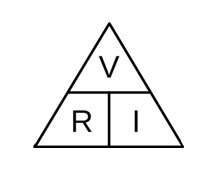

El científico Georg Simon Ohm (1789 -1854) determino que:
"La intensidad de la corriente eléctrica que recorre un circuito eléctrico es directamente proporcional a la tensión aplicada e inversamente proporcional a la resistencia eléctrica"
Esto en lenguaje matemático se representa mediante la siguiente ecuación:
Donde:
I = Intensidad Electrica
V = Tension Electrica
R = Resistencia Electrica
Este triangulo, nos permite poder encontrar las tres formas que la ecuación de la ley de Ohm puede tener.
Se conecta una batería de 12 Voltios de tensión a los extremos de un circuito. La resistencia eléctrica total del circuito es de 6 Ohmios. ¿Cuál es la intensidad eléctrica que circula por el mismo?
1.- Para empezar debemos obtener los datos que el ejercicio nos está dando y el que debemos averiguar.
Datos:
Tension: 12 Voltios
Resistencia electrica: 6 Ohmios
Intensidad electrica: No lo sabemos, es el dato que debemos obtener.
2.- El valor que debemos averiguar en este caso es la intensidad eléctrica, por lo tanto para conocer su valor debemos aplicar la ecuación de la ley de Ohm.
De acuerdo a la ecuación de la ley de Ohm, el valor de la intensidad eléctrica se obtiene dividendo la tensión por la resistencia. En este ejercicio, la intensidad eléctrica es igual a 2 Amperios y la respuesta al ejercicio seria:
“La intensidad eléctrica que circula por el circuito es de 2 Amperios.”